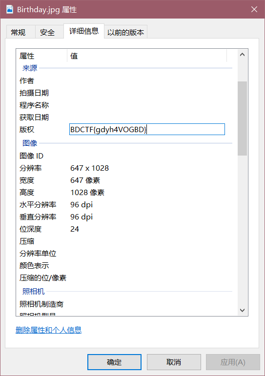

2018-10-29
赛前准备：自从高三那年，西安线下的网信杯被打爆以后，知道了收集工具和wp的重要性。希望大家以后也多刷题多写wp。当时受到了iosmosic师傅的指点，自己用Hexo搭建个博客以后打比赛，用自己电脑可以本地搭建。这次比赛受益匪浅
我就不标题号了，顺序因为我忘了。至于当时做题遇到的坑我就不提了，直接绕过。
BrainFuck
这道题，打开是个图片，一只单身狗。。。跟我一样的情况/dk。（实验吧隐写原题）
题目链接
刚刚拿到这个题目的时候，感觉很开心。捡便宜了，赛前两周的刷题没白费。
这个题目首先得有一个工具，叫bftools。CSDN上下载得花点rmb，我就免费送了吧
bftools 提取码：ain5
然后 得把图片放到他的目录下，然后cmd进入的目录输入命令：bftools.exe decode braincopter doge.png -o 2.png
继续输入命令：bftolls.exe run 2.png
就会出现一段base64。解密就是我们的flag了。
然后python解密代码：
1 | import base64 |
最后flag：CTF{Brainfuck_1s_Simp1e}
ASCII
这个题目打开以后，看到了一串字符。看到里面最大的是字母F。所以可以断定这个是16进制的字符。然后看到ASCII码，就知道了这个需要把16进制转换成ASCII码
（说实话这道题有点像ISCC2017的Misc里面的一道字符编码题目）
ASCII码我们知道，可见字符只有95个,也就是32-126。ascii码总共有128个，完整的是有255个。
所以我们先转换一下看看。
1 | a = "ab979adf8e8a969c94df9d8d908891df999087df958a928fdf90899a8ddf8b979adf939e8586df9b9098dedfab979adf99939e98df968cc5df9d9b9c8b9984a6cf8aa09e8d9aa08c929e8dc882" |
我们发现打印出来是一堆看不懂的字符。
���ߎ����ߝ����ߙ��ߕ���ߐ���ߋ��ߓ���ߛ���߫��ߙ���ߖ��ߝ������ϊ���������Ȃ
其实到这里一般人当作乱码就给处理了。但是这里不是乱码。上面也说了ascii码了。所以看一下他对应的10进制数字是多少。
1 | #encoding=utf-8 |
171,151,154,223,……153,132166,207,138,160,158,141,154,160,140,146,158,141,200,130
发现普遍都是大于126，所以不可见了。根据ASCII码的基本理解，所以我们将他们与255相减然后再转换。
1 | #encoding=utf-8 |
最后的flag：BDCTF{Y0u_are_smar7}
Excel
这个题目没什么好说的，直接用notepad++打开然后搜索CTF关键词就行了.(实验吧原题)
最后flag: CTF{office_easy_cracked}
flag就在图片里面
这道题也是实验吧的原题。想要做这道题得准备一个生日字典。还好我之前做的时候没有删除掉，所以刚刚好用上
工具：Ziperello
字典：生日1980-2010年密码字典（我从百度上下载的）
使用这个工具直接用上我们的字典就可以爆破开
然后我们可以得到压缩包的密码为：19950522
解压就可以看到一个图片，我们看他属性就可以了。

好美的玫瑰花
实验吧原题：链接
属实来说，这道题刚刚看到想了很久。就是想不起来哪里做到过。然后既然前面那么多实验吧原题，就去看了看自己提前下载好的各个比赛wp的pdf。找到了这个题目
wp谁也会看，这里就不说了。按照那个wp一步一步来就可以了
最后KEY：D77F5E4385291BCB
然后套上比赛格式BDCTF{}就行了
画一画、扫一扫
实验吧原题：链接
这个题目打开以后发现了一堆坐标。这里我们可以使用这个gnuplot工具
下载地址
但是我们的坐标还不会被工具识别，需要我们进行处理一下才可以。（得把括号去掉，逗号换成空格。）
然后将它保存在桌面上，并且命名为1.txt(这样简单的命名与存放可以省去处理错误的麻烦)
然后我们开始绘图，命令：plot 你的坐标文件地址

然后我们使用QR扫描一下就可以了

最后flag：CTF{simplectf_QR_code}
紧急报文
这个题目是实验吧原题：链接
ADFGX密码表，直接对照一下就OK，但是在答案的地方，出现了个脑洞。我们需要把P倒过来。（搞得我以为是题目出问题了，还特别找了下裁判，只能说我自己太垃圾了）
然后我们对照出来的就是：puedoctf
最后的flag：BDCTF{buedoctf}
眼花了吗
这个题目实验吧原题：链接
这个题目还是参考了保存的wp。
上来肯定要先判断，这个图片到底藏没藏东西，然后使用binwalk工具来分离一下。
至于用stegsolve那几步的坑我就不说了。没什么用我觉得。直接说正解吧
用stegsolve打开那个分离出来的图片00003754.png。直接打开red plane那个通道下面的图片，然后保存。
之后再用画图另存为bmp格式的图片，重点是要用单色道进行保存。
然后我们用winhex打开就可以看到flag了。
最后flag：ISG{E4sY_StEg4n0gR4pHy}
写不动了。。。。。后面再更吧
hash
这道题有点像实验吧的这道题：
ROT-13变身了
题：
现在我们有一个压缩文件,但我们不知道完整的解压密码。
幸好我们知道解压密码的一部分hash值，不过这个hash值被人改动过
你能帮我们找到的密码吗?
不完整的密码：”ryi_c0l” （ 代表可打印字符）
不完整的hash值：”5adlc6b602c8d64l999bd2lb95b36a9l992”（*代表可打印字符）
这里提示我们的是不可见的地方是我们的可打印字符，还是根据上面的ASCC码的概念，我们知道可见字符是在32-126之间。
基本思路：爆破不完整的密码，然后用shal进行加密。然后将加密后的hash与这里不完整的hash比对。如果存在个位置以上的相同的那么基本上就可以确定了
直接上代码：
1 | #encoding=utf-8 |
最后结果：
所以flag就是：Cry_i5_c00l
古典密码很有趣
这个题目很蒙蔽。最后还是逼的用简单替换密码的思路搞出来的。
先给了一串字符：
4A52555449354B4D4E4559474F54444A4752324559555A514D354747534E44564A525554415A324D4E4532484B5443544742545559324A554F524746474D44484A5255544135434D4B4D59474F5443544742324559324A554D354747534D44554A524A544150493D
不知道是啥，先base64一下看看吧。发现不行，16进制转ascii码也不行。最后发现是base64全家桶
直接上代码解密：
1 | import base64 |
然后可以解密出来一串莫斯密码。
结果：….- ..— ….- …– ..— .—- —.. .—-
然后我们莫斯解密一下
得到了一串数字：42432181
然后我们发现最大数字是8.最后经过一系列尝试。发现也就9位键盘密码能解密出来个像样的字符
RE
re1
其实就是道标准的RC4，算法上没有怎么进行魔改，只是在puts函数哪里加了到混淆，很多人都会当成C里面的puts函数正常打印出文字，实际上里面：
可以看到在里面执行了sub_400686这个函数一次，结合主函数看，可以知道他在一开始就运行了一次。
主函数：
基本上可以知道，我们输入的数据也进入了sub_400686这个函数进行了处理，然后v3是我们输入数据的长度。
最后将处理完的数组s和这个不知道名字的字符串数组进行了对比，如果一样就正确。
sub_400686函数：
可以看到这个sub_400686就是个程序的主要加密过程。
具体学习可以根据：
rc4加密原理
然后我们优化下算法让那些”—“符号换成应该的字符
然后根据已知信息大概可以知道程序的基本运行逻辑是什么了。接着就是开始解密就OK
基本逻辑：运行程序 -> 先加密一次Key(优化完毕以后可以看到data和k都是key) -> 加密输入的数据 ->用加密后的数据s和_进行比较
程序中的_就是密文，然后key就是密钥。所以直接编写解密脚本就可以了
具体加密后的key可以使用动态调试就可以看到。
密文就是：
然后就可以写解密脚本了，使用python的话调用pycrypto模块就可以搞定。
最后脚本：
1 | #coding="utf-8" |
re2
题目直接就告诉了使用符号执行angr，所以简单的分析下程序
然后就开始
1 | import angr |
发现有点坑，这个输入的num有4个，所以要做下分片处理，再输入到程序就OK